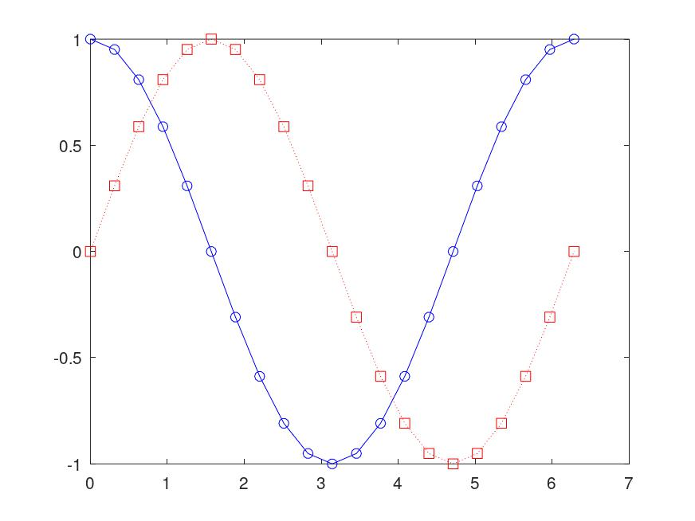
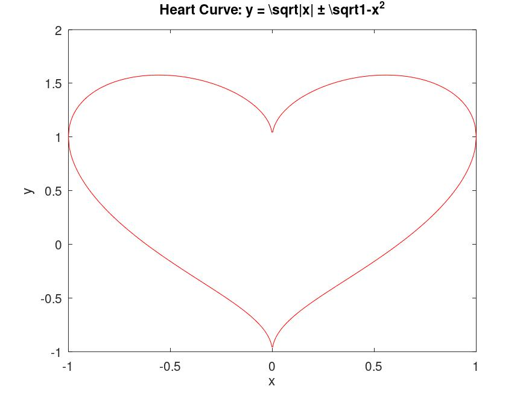
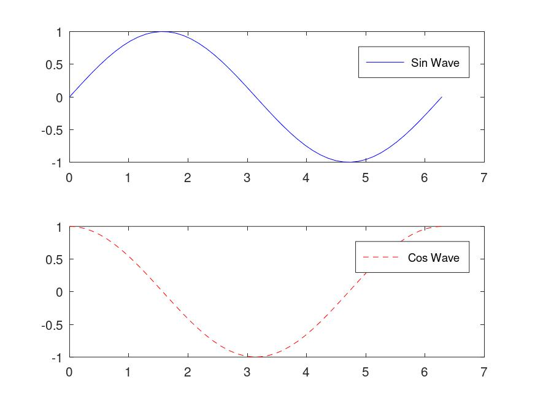
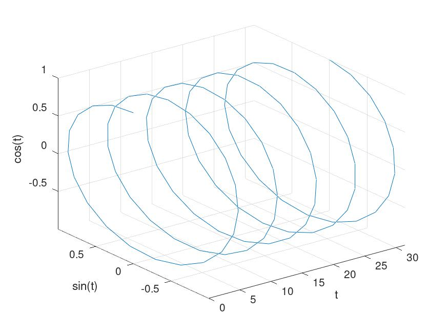
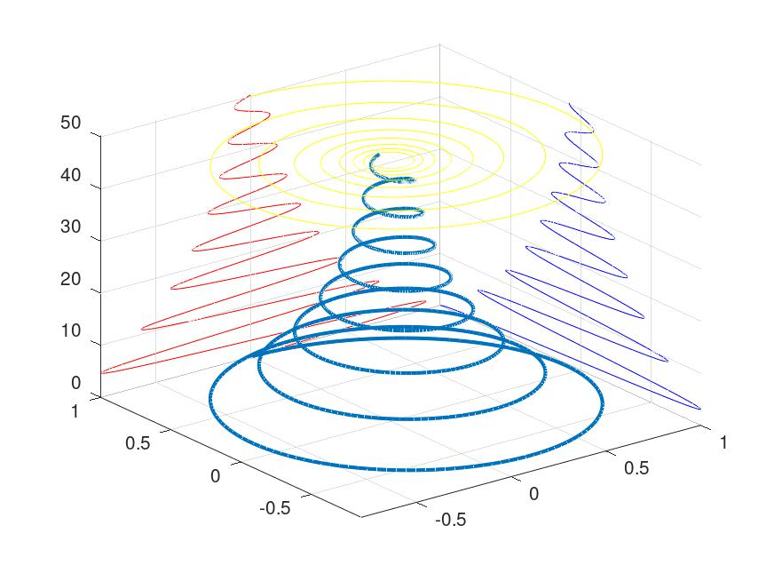
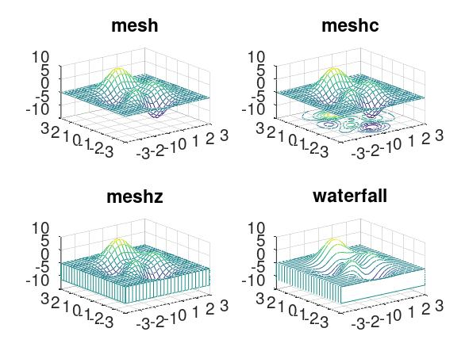
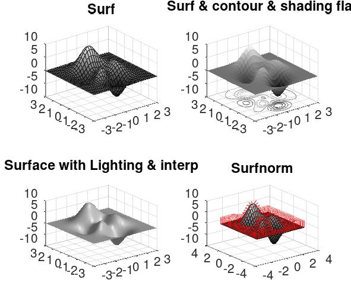
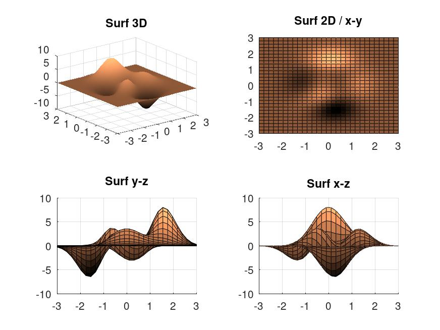
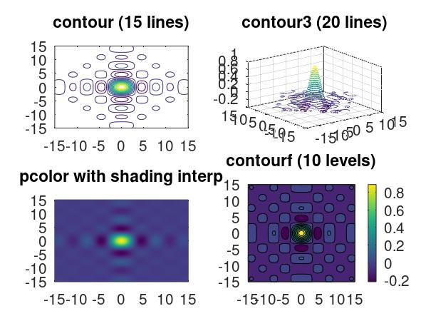

基礎程式設計
節錄第二章至第九章內容
2-1 簡單運算
format
用於控制數值的顯示格式
- format short: 5位有效數字
- format long: 15位有效數字
- format short e: 科學記號, 5位有效數字
- format long e: 科學記號, 15位有效數字
- format short g: 自動選擇是否科學記號
- format long g: 同上, 變為15位有效數字
- format bank: 顯示兩位小數
>> pi+3
ans = 6.1416
>> format short e
>> pi-3
ans = 1.4159e-01
>> format long e
>> pi/3
ans = 1.047197551196598e+00
>> format short g
>> pi^2
ans = 9.8696
>> format long g
>> pi*3
ans = 9.424777960769379
>> format bank
>> pi\3
ans = 0.95
2-2 變數
大小寫不同, 開頭必須為字母, 最多31個字元賦予變數數值. 在clear之前, 命令視窗(Command Window)會記住其數值
特殊變數
- eps: 傳回最精確的浮點值
>> eps
ans = 2.2204e-16
- i, j: 虛數
ans = 0.0000+1.0000i
>> j
ans = 0.0000+1.0000i
- inf: 無限大
ans = Inf
- nan: 不是一個數值
ans = NaN
- intmax: 回傳整數類別的最大值
- intmin: 回傳整數類別的最小值
x = 127
>> x=intmax('int32')
x = 2147483647
>>x=intmin('int8')
x = -128
程式碼敘述的最後加上;號代表敘述結束, 命令視窗不會顯示數值
>> a=2;
>> b=31;
>> c=1847;
>> a*b*c
ans = 114514
2-3 複數函數
a + bi 是直角座標表示
>> a=3;
>> b=4;
>> c=a+b*i
c = 3 + 4i
>> c=a+b*j
c = 3 + 4i
- abs：絕對值
- angle：徑度相位角以角度表示，必須乘上180 / pi
- complex(a, b)：複數函數，a 為實數部分，b 為虛數部分
- conj()：取共軛複數
- real：取實數部分
- imag：取虛數部分
- isreal：是否為實數，若真回傳值1，否則回傳值0
ans = 5
>> angle(c)
ans = 0.9273
>> angle(c)*180/pi
ans = 53.1301
>> complex(a,b)
ans = 3 + 4i
>> conj(c)
ans = 3 - 4i
>> real(c)
ans = 3
>> imag(c)
ans = 4
>> isreal(a)
ans = 1
>> isreal(c)
ans = 0
2-4 三角函數
以sin函數舉例
- sin(x): 弳度x 取sin值
- sind(x): 角度 x 度取sin值
- sinpi(x): x * pi 取sin值
- asin(x): x 取sin-1值
- asind(x): 角度 x 度取sin-1值
ans = 0.5000
>> sind(30)
ans = 0.5000
>> sinpi(1/6)
ans = 0.5000
>> asin(0.5)
ans = 0.5236
>> asind(0.5)
ans = 30.000
2-5 指數函數
(待補充)
2-6 算數函數
(待補充)
3-1 簡易陣列
x=[a,b,c,d] or x=[a b c d] : 產生任意元素列向量
x=[a;b;c;d] : 產生任意元素行向量
x = x' : row向量與行column向量互換
x =
1 2 3
4 5 6
7 8 9
>> x=x'
x =
1 4 7
2 5 8
3 6 9
- x = first : last
從first開始,每次遞增1到last
- x = first : n : last
從first開始,每次以n值遞增到last
x =
1 2 3 4 5
>> x=1:2:9
x =
1 3 5 7 9
- x = linspace(first,last,n)
列向量x, 從first開始,到last結束, 有n個元素
- x = logspace(first,last,n)
列向量x, 從10first開始,到10last結束, 有n個元素
ans =
1 3 5
>> logspace(1,5,3)
ans =
10 1000 100000
3-2 點積與叉積
- dot(a,b): 兩向量a,b之內積
- cross(a,b): 兩向量a,b之外積
>> b=[4 5 6];
>> dot(a,b)
ans = 32
>> cross(a,b)
ans =
-3 6 -3
3-3 簡易運算
- A + c 純量相加
- A - c 純量相減
- A * c 純量相乘
- A / c 純量相除
- A + B 陣列相加
- A - B 陣列相加
- A .* B 陣列相乘(同位置元素相乘)
- A ./ B 陣列右相除
- A .\ B 陣列左相除
- A .^ B 陣列次方
>> B=[1 1 1 1;2 2 2 2];
>> A+B
ans =
2 3 4 5
7 8 9 10
>>A-B
ans =
0 1 2 3
3 4 5 6
>> A.*B
ans =
1 2 3 4
10 12 14 16
>> A./B
ans =
1.0000 2.0000 3.0000 4.0000
2.5000 3.0000 3.5000 4.0000
>> A.\B
ans =
1.0000 0.5000 0.3333 0.2500
0.4000 0.3333 0.2857 0.2500
>> A.^B
ans =
1 2 3 4
25 36 49 64
3-4 標準陣列
ones, zeros
- ones(n): 由1組成的n×n矩陣
- zeros(n): 由0組成的n×n矩陣
- ones(r, c): 由1組成的r×c矩陣
- zeros(r, c): 由0組成的r×c矩陣
ans =
1 1 1
1 1 1
1 1 1
>> zeros(3)
ans =
0 0 0
0 0 0
0 0 0
>> ones(2,3)
ans =
1 1 1
1 1 1
>> zeros(2,3)
ans =
0 0 0
0 0 0
random 與 diag
- rand(n): 由0~1的亂數組成的n×n矩陣
- rand(r, c): 由0~1的亂數組成的r×c矩陣
- randn(n): 由亂數(含負數)組成的n×n矩陣
- randn(r, c): 由亂數(含負數)組成的r×c矩陣
ans =
0.1404 0.7879
0.1826 0.3719
>> rand(2,3)
ans =
0.075614 0.953349 0.155306
0.388347 0.730895 0.989118
>> randn(2)
ans =
-0.9353 -1.5979
-1.2564 0.5329
>> randn(2,3)
ans =
0.612376 -0.624871 0.090714
-0.722252 0.852230 -1.952485
- diag(a:b): 建立主對角矩陣
- diag(a:b,k): 建立偏移對角矩陣
ans =
1 0 0
0 2 0
0 0 3
>> diag(1:3,1)
ans =
0 1 0 0
0 0 2 0
0 0 0 3
0 0 0 0
3-5 陣列控制
待補充
3-6 陣列排序
待補充
3-7 陣列搜尋
待補充
3-8 陣列控制函數
flipud(x): 將x陣列上下顛倒
fliplr(x): 將x陣列左右顛倒
rot90(x): 將x陣列逆時針旋轉90度
rot90(x,n): 將x陣列逆時針旋轉n*90度
diag(x): 顯示x陣列對角線
reshape(x,n,m): 將x陣列重新排列成n列m行
triu(x): 顯示x陣列右上部, 其餘設定為0
tril(x): 顯示x陣列左下部, 其餘設定為0
knor(x,y): 顯示x陣列各元素乘上y陣列
repmat(x,[m,n]): 顯示x陣列, 重複為m列n行
x =
1 -2
3 4
>> flipud(x)
ans =
3 4
1 -2
>> fliplr(x)
ans =
-2 1
4 3
>> rot90(x)
ans =
-2 4
1 3
>> rot90(x,3)
ans =
3 1
4 -2
>> diag(x)
ans =
1
4
>> reshape(x,1,4)
ans =
1 3 -2 4
>> reshape(x,4,1)
ans =
1
3
-2
4
>> triu(x)
ans =
1 -2
0 4
>> tril(x)
ans =
1 0
3 4
>>repmat(x,[2,3])
ans =
1 -2 1 -2 1 -2
3 4 3 4 3 4
1 -2 1 -2 1 -2
3 4 3 4 3 4
4-1 M函數
M檔案是Octave的程式檔, 裡面可以寫指令、函數、迴圈或運算. Script檔(文字檔)較為常見. 透過編輯(Editor)視窗, 可以創立New Script
4-2 有用的函數
beep
發出「嗶」聲(系統提示音)
input
要求使用者輸入資料
disp
顯示文字或變數內容
echo on / echo off
顯示或隱藏執行中的程式碼。
pause
暫停程式執行,可選擇暫停秒數.無參數版需手動按任意鍵繼續
waitforbuttonpress
暫停程式直到使用者在圖形視窗中按鍵盤或滑鼠.
4-3 關係運算
- < (小於)
- <= (小於等於)
- > (大於)
- >= (大於等於)
- == (等於)
- ~= (不等於)
函式成立輸出1, 不成立輸出0
>> b=2;
>> a>b
ans = 0
>> a<b
ans = 1
>> a<=b
ans = 1
>> a>=b
ans = 0
>> a==b
ans = 0
>> a~=b
ans = 1
4-4 邏輯運算
- &(and, 且): 符號兩邊同時成立
- |(or, 或): 符號至少一邊成立
- ~(not, 非)
函式成立輸出1, 不成立輸出0
x = 3
>> y=4
y = 4
>> (x>0)&(y>0)
ans = 1
>> (x>0)|(y>0)
ans = 1
>> (x>0)|(y<0)
ans = 1
>> (x<0)|(y<0)
ans = 0
>> ~(x>0)
ans = 0
>> ~(x<0)
ans = 1
4-5 函數
- all(x): 逐行檢查陣列x, 全部不為零元素, 輸出1
- any(x): 逐行檢查陣列x, 有不為零元素, 輸出1
- find(x): 檢查陣列x, 有不為零元素的位置
x =
0 1 2
3 0 4
5 6 0
>> all(x)
ans =
0 0 0
>> any(x)
ans =
1 1 1
>> find(x)
ans =
2
3
4
6
7
8
- isfinite(y): 檢查陣列y, 元素值為有限值, 輸出1
- isinf(y): 檢查陣列y, 元素值為無限值, 輸出1
- isnan(y): 檢查陣列y, 元素值為非數值, 輸出1
- isnumeric(y): 檢查陣列y, 元素值為數據, 輸出1
- isempty(y): 檢查陣列y, 元素值為空陣列, 輸出1
y =
Inf 2 3
4 NaN 6
7 8 0
>> isfinite(y)
ans =
0 1 1
1 0 1
1 1 1
>> isinf(y)
ans =
1 0 0
0 0 0
0 0 0
>> isnan(y)
ans =
0 0 0
0 1 0
0 0 0
>> isnumeric(y)
ans = 1
>> isempty(y)
ans = 0
- ischar(z): 檢查陣列z, 元素值為字串陣列, 輸出1
z = string
>> ischar(z)
ans = 1
5-1 for迴圈
基本用法
for迴圈會讓變數在特定範圍依序取一組值, 重複執行區塊內的指令
% editor
clc
for x = 0:2:10
disp(x)
end
% command window
0
2
4
6
8
10
巢狀迴圈
可以在一個迴圈裡再放另一個迴圈，用來處理矩陣或多維資料
% editor
clc
for i = 1:3
for j = 1:2
disp(['i=' num2str(i) ', j=' num2str(j)])
num2str用來把數值(number)轉成文字(string)
end
end
% command window
i=1, j=1
i=1, j=2
i=2, j=1
i=2, j=2
i=3, j=1
i=3, j=2
5-2 while迴圈
while迴圈會在條件為rue時, 重複執行區塊內的程式碼. 只要條件仍為真, 程式就會持續執行
% editor
i = 1; while迴圈初始值設為0
while i <= 5 條件式i小於等於5
disp(i)
i = i + 1;
end
% command window
1
2
3
4
5
5-3 if
if 判斷某個條件是否成立, 若為真(true), 則執行對應區塊
% editor
clc
for i = 1:5
if mod(i, 2) == 0
若能被 2 整除 → 偶數
disp([num2str(i) ' 是偶數']);
將數字轉字串再連接
else
否則 → 奇數
disp([num2str(i) ' 是奇數']);
end
end
% command window
1 是奇數
2 是偶數
3 是奇數
4 是偶數
5 是奇數
5-4 switch~case
switch–case用來依照「條件值」執行不同的程式區塊, 類似多重if ... elseif ... else的功能
% editor
clc
for n =(1:5);
數字1~5
is_prime = true;
先假設是質數
if n <= 1
is_prime = false;
1 以下不是質數
else
for i = 2:(n-1)
檢查從 2 到 n-1
switch mod(n, i)
將 n 對 i 取餘數
case 0
若餘數為0
is_prime = false;
表示能整除, 即n不是質數
break;
提前結束
otherwise
其他情況(餘數非0)
end
不做事, 繼續下一次迴圈
end
end
switch is_prime
case true
disp([num2str(n) ' 是質數']);
case false
disp([num2str(n) ' 不是質數']);
end
end
% command window
1 不是質數
2 是質數
3 是質數
4 不是質數
5 是質數
6-1 eval
eval會把字串作一段Octave程式來執行
% editor
clc
eval('a = 5; b = 7; c = a + b';)
disp(c);
% command window
12
% editor
clc
for i = 1:3
eval(['x' num2str(i) ' = i^2;']);
字串變成 x1=1, x2=4, x3=9並執行
end
disp(x1)
disp(x2)
disp(x3)
% command window
1
4
9
6-2 feval
feval用於以函數名稱(或函數變數)呼叫函數
y = feval(函數名稱, 參數1, 參數2, ...);
% editor
clc
k= feval('sin', pi/2);
disp(k)
% command window
1
6-3 自定函數
% editor
clc
function [sum1,sum2,sum3]=mysum123(x,y)
輸出參數為sum1、sum2、sum3, 輸入參數為x、y, 函數名稱為mysum123
sum1=x+y; 設定輸出參數sum1
sum2=x^2+y^2; 設定輸出參數sum2
sum3=x^3+y^3; 設定輸出參數sum3
end
% command window
>> [a,b,c]=mysum123(3,4)
a = 7
b = 25
c = 91
輸入參數可以為陣列或矩陣型態的變數
如m = 1:2:5, n = 2:2:6
% command window
>> m=1:2:5
m =
1 3 5
>> n=2:2:6
n =
2 4 6
>> [a,b,c]=mysum123(m,n)
a =
3 7 11
b =
5 25 61
c =
9 91 341
6-4 遞迴
遞迴函式是在函式內部呼叫自己本身的函式. 每次呼叫都會處理問題的一部分, 直到達到終止條件才停止
以階乘函數(n!)為例
% editor
clc
function f = factorial(n)
if n == 0 || n == 1 終止條件
f = 1
else
f = n * factorial(n - 1) 遞迴呼叫
end
end
% command window
>> disp(factorial(5))
f = 1
f = 2
f = 6
f = 24
f = 120
120
7-1 矩陣基本運算
- A': 矩陣軛轉置 行列互換, 還會取虛部的共軛
- A ^ n: 乘冪 數學意義為N個矩陣A相乘
- inv(A): 反矩陣 得一矩陣 $B$ 使得 $A \times B = I$
- det(A): 矩陣行列式 得出det(A) = 0即矩陣A無反矩陣
- expm(A): 矩陣的指數
- logm(A): 矩陣的對數 $得一矩陣 B 且 e^B = A$
- sqrtm(A): 矩陣的開平方根 $得一矩陣B 且 B \times B = A$
7-2 矩陣函數
- [ ]: 空矩陣
- zeros(n): n × n 全0 矩陣
- ones(n): n × n 全1 矩陣
- eye(n): n × n 單位矩陣
- rand(n): n × n 隨機矩陣
- randn(n): n × n 常態分佈隨機矩陣
若括號裡為(m,n) , 會產生對應的 m × n矩陣
若括號裡為(m,n,p) , 會產生對應的 m × n × p 多層矩陣(3D)
7-3 矩陣變換函數
- reshape(): 矩陣總個數不變, 改變行數和列數
- repmat(): 將矩陣依指定行、列數擴展
- fliplr(): 矩陣左右翻轉
- flipud(): 矩陣上下翻轉
- rot90(): 矩陣逆時針旋轉90 度
- rot90(a, n): 矩陣逆時針旋轉n×90 度
% command window
>> A = [1, 2; 3, 4]A =
1 2
3 4
>> reshape(A, 1, 4)
ans =
1 3 2 4
>> repmat(A, 2, 1)
ans =
1 2
3 4
1 2
3 4
>> fliplr(A)
ans =
2 1
4 3
>> flipud(A)
ans =
3 4
1 2
>> rot90(A)
ans =
2 4
1 3
>> rot90(A, 2)
ans =
4 3
2 1
7-4 線性方程式
求解 線性方程組 ($Ax = b$) 的函數會使用到
x = linsolve(A, b)
以下聯立方程做舉例 $$\begin{cases} 3x + 2y = 7 \\ 1x + 4y = 9 \end{cases}$$
% command window
>> A = [3, 2; 1, 4];
>> b = [7; 9];
>> x = linsolve(A, b)
>> x =
1
2
8-1 plot
- plot(x, y, S): 以S方式顯示(x、y)曲線圖形. S為字元字串, 包括Color、Marker、LineStyle
- plot(x1, y1, S1, x2, y2, S2): 以S 方式顯示(x1、 y1)，(x2、y2)兩組曲線圖形
- x = init : step : stop: 線性陣列範圍
- linspace(begin, end, data no): 線性陣列範圍
- logspace(begin, end, data no): 對數陣列範圍
>> x = 1 : 2 : 9
x =
1 3 5 7 9
>> x = linspace(1, 10, 4)
x =
1 4 7 10
>> x = logspace(0, 2, 3)
x =
1 10 100
範例:
% editor
clc
clear
x = linspace(0, 2*pi, 21);
y1 = cos(x);
y2 = sin(x);
plot(x, y1, 'bo-',x,y2,'rs:');

8-2 label & axes box
- grid on/off: 座標方格標示/隱藏
- title: 圖表標題
- xlabel(' text '):x 軸名稱
- ylabel(' text '):y 軸名稱
- text(x 位置, y 位置, ' text '):圖表(x, y)位置標示名稱
- axis([xbegin, xend, ybegin, yend]): 座標軸的限制範圍
- box on/off: 圖表邊框顯示/隱藏
範例
% editor
x = linspace(-1, 1, 500);
y1 = sqrt(abs(x)) + sqrt(1 - x.^2);
y2 = sqrt(abs(x)) - sqrt(1 - x.^2);
plot(x, y1, 'r-', x, y2, 'r-');
xlabel('x');
ylabel('y');
axis([-1,1,-1,2]);
title('Heart Curve: y = \sqrt{|x|} \pm \sqrt{1-x^2}');

8-3 axis & zoom
- axis auto: 預設座標軸刻度
- axis tight: 以數據限制為座標軸刻度
- axis ij: 座標軸為矩陣模式. x 軸從左而右遞增, y 軸從上而下遞增
- axis xy: 座標軸為直角座標模式. x 軸從左而 右遞增, y 軸從下而上遞增
- axis equal: 座標軸刻度增量相同
- axis square: 座標軸圖形視窗為正方形
- axis normal: 將目前的座標軸刻度恢復到全尺寸
- axis on/off: 座標軸的文字標記、背景是否顯示
- zoom on: 開啟交互式縮放. 滑鼠左鍵放大, 右鍵縮小
- zoom out: 將圖形還原到原始的全覽視角
- zoom xon: 限制僅能縮放 X 軸
- zoom yon: 限制僅能縮放 Y 軸
8-4 多重繪圖
- clf: 清除目前視窗中的所有內容, 但保留視窗
- close: 關閉目前的繪圖視窗
- close all: 關閉所有開啟中的繪圖視窗
- hold on: 保留目前的圖形, 之後執行的 plot 指令會直接「疊加」在原圖上, 不會覆蓋舊圖
- hold off: 關閉疊加模式
- subplot(m, n, p): 將一個視窗切割成m × n的網格, 並將圖畫在第 p 個格子裡
- legend('Data 1', 'Data 2'): 依照畫圖的順序為線條加上圖例標籤
- legend off: 隱藏目前圖形上的圖例
範例
% editor
close all; % 先關閉舊視窗
x = linspace(0, 2*pi, 50);
subplot(2, 1, 1); % 畫在上半部
plot(x, sin(x), 'b-');
legend('Sin Wave');
subplot(2, 1, 2); % 畫在下半部
plot(x, cos(x), 'r--');
legend('Cos Wave');

9-1 線條圖
plot3(x1,yi,z1,S1,x2,y2,z2,S2): 於三維空間以字串命令控制多重繪圖與樣式
範例
%editor
t = linspace(0, 10*pi);
y1 = sin(t); y2 = cos(t);
plot3(t, y1, y2);
% 繪製 3D 座標：X軸為時間 t，Y軸為 sin(t)，Z軸為 cos(t)
xlabel('t'); ylabel('sin(t)'); zlabel('cos(t)'); % 為三個軸分別加上標籤。
grid on; % 開啟 3D 網格線, 方便觀察空間位置
axis tight; % 將座標軸縮放至剛好包覆所有數據, 消除空白邊界

% editor
t = 0 : 0.05 : 16*pi;
x = exp(-0.05*t).*sin(t);
y = exp(-0.05*t).*cos(t);
z = t;
% 繪製原始 3D 螺旋線
plot3(x, y, z, 'LineWidth', 2);
grid on; axis tight; hold on;
% 投影到 Y-Z 平面 (設定 X = 1)
plot3(1*ones(size(x)), y, z, 'b-');
% 投影到 X-Z 平面 (設定 Y = 1)
plot3(x, 1*ones(size(y)), z, 'r-');
% 投影到 X-Y 平面 (設定 Z = 50)
plot3(x, y, 50*ones(size(z)), 'y-');
hold off;

9-2 網格圖
- [X, Y, Z] = peaks(30) 是一個內建函數，會產生一個類似山峰的範例矩陣（30x30）, 常用於測試繪圖功能
- [X, Y] = meshgrid(x,y) 將一維向量轉化為二維網格矩陣, X 矩陣儲存所有點的 x 座標, Y 矩陣儲存 y 座標
- hidden off 關閉隱藏線消除, 使曲面變為「透明」, 可以看到被山峰遮住的後方網格線
- mesh(X, Y, Z) 最基礎的 3D 網格圖, 線條有顏色, 但網格面是透明的
- meshc(X, Y, Z) 即Mesh + Contour. 在網格圖的底部加上等高線
- meshz(X, Y, Z) 即Mesh + Curtain: 在網格圖四周加上底座, 使其看起來像一個實體模型
- waterfall(X, Y, Z) 瀑布圖, 只保留一個方向的網格線(通常是 X 方向), 產生像瀑布流動般的視覺效果
範例
% editor
[X, Y, Z] = peaks(25);
subplot(2, 2, 1);
mesh(X, Y, Z);
title('mesh');
subplot(2, 2, 2);
meshc(X, Y, Z);
title('meshc');
subplot(2, 2, 3);
meshz(X, Y, Z);
title('meshz');
subplot(2, 2, 4);
waterfall(X, Y, Z);
title('waterfall');

9-3 表面圖
- surf(X, Y, Z) 繪製實體曲面, 預設會顯示黑色的網格線
- surfc(X, Y, Z) 即Surf + Contour, 在實體曲面下方加上等高線投影
- surfl(X, Y, Z) 即Surf with Lighting, 繪製帶有光源反射效果的曲面, 看起來更有金屬或塑膠的質感
- surfnorm(X, Y, Z) 計算曲面每一點的法向量, 可在曲面上畫出向外指的箭頭, 顯示表面的垂直方向
- shading faceted 為預設模式. 顯示網格線且每個網格面內部顏色統一
- shading flat 每個網格面顏色統一, 但隱藏黑色的網格線
- shading interp 插值著色. 隱藏網格線並透過顏色漸層使表面看起來非常平滑
- colormap() 更改顏色配置
% editor
[X, Y, Z] = peaks(30);
subplot(2, 2, 1);
surf(X, Y, Z);
shading faceted;
colormap(gray);
title('Surf');
subplot(2, 2, 2);
surfc(X, Y, Z);
shading flat;
title('Surf & contour & shading flat');
subplot(2, 2, 3);
surfl(X, Y, Z);
shading interp;
title('Surface with Lighting & interp');
subplot(2, 2, 4);
surfnorm(X, Y, Z);
title('Surfnorm');

9-4 觀察點
view(az, el)
最常用的控制形式, 使用方位角與仰角來定義- az (Azimuth, 方位角): 繞著 Z 軸旋轉的角度（以負 Y 軸為 0 度, 逆時針旋轉）
- el (Elevation, 仰角): 與 X-Y 平面的夾角
範例
subplot(2, 2, 1);
surf(X, Y, Z);
shading interp;
colormap(copper);
view(3);
% 切換到預設的 3D 視角(-37.5,30)title('Surf 3D');
subplot(2, 2, 2);
surf(X, Y, Z);
view(2);
% 切換到預設的 2D 俯視視角(0,90)title('Surf 2D / x-y');
subplot(2, 2, 3);
surf(X, Y, Z);
view(90, 0);
% 從 Y-Z 平面側面觀察title('Surf y-z');
subplot(2, 2, 4);
surf(X, Y, Z);
view(0, 0);
% 從 X-Z 平面側面觀察title('Surf x-z');

9-5 等高線圖
- contour(X, Y, Z, n) 在 2D 平面上繪製 n 條等高線
- contour3(X, Y, Z, n) 在 3D 空間中繪製 n 條等高線, 線條依照其 Z 值高度懸浮在空間中
- contourf(X, Y, Z, n) 繪製填滿顏色的 2D 等高線圖, 視覺效果類似氣象局的降雨分布圖
- pcolor(X, Y, Z) 偽彩色圖. 不會畫出線條, 而是直接根據 Z 值在網格點上著色（通常搭配 shading interp 使用） clabel(C, h) 加上數值標籤
範例
[X, Y] = meshgrid(-15 : 0.5 : 15);
% 使用 eps 防止分母為零
Z = (sin(X + eps) ./ (X + eps)) .* (sin(Y + eps) ./ (Y + eps));
subplot(2, 2, 1);
contour(X, Y, Z, 15);
title('contour (15 lines)');
subplot(2, 2, 2);
contour3(X, Y, Z, 20);
title('contour3 (20 lines)');
subplot(2, 2, 3);
pcolor(X, Y, Z);
shading interp; % 讓顏色平滑過渡
title('pcolor with shading interp');
subplot(2, 2, 4);
contourf(X, Y, Z, 10);
title('contourf (10 levels)');
colorbar; % 顯示數值顏色尺標
